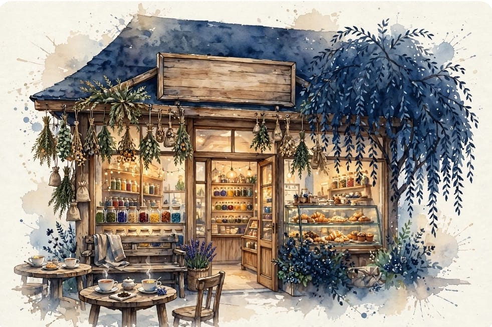
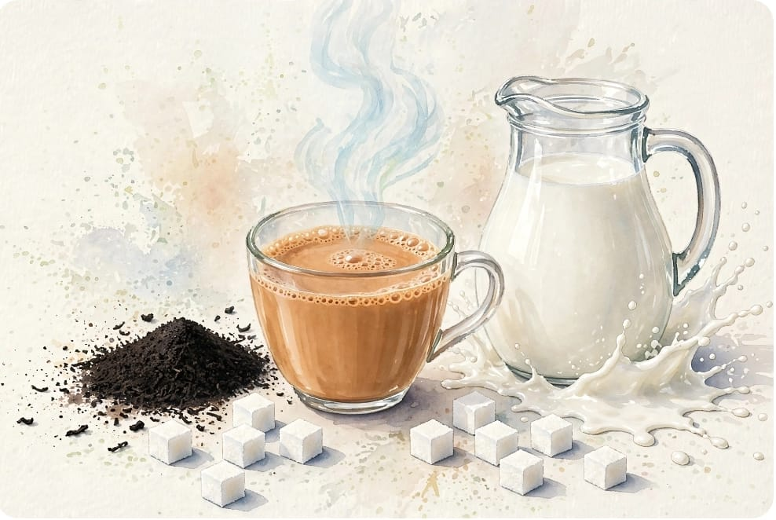
Indian tea is one of the most loved beverages in the world. It is prepared from fresh tea leaves grown in famous regions such as Assam, Darjeeling, Nilgiri, and Kerala. Indian tea is known for its rich aroma, pleasant taste, and refreshing flavour. It can be enjoyed at any time of the day and is served both at homes and tea shops.
To prepare Indian tea, water is first brought to a boil. Tea leaves are added and allowed to steep for a few minutes to develop their flavour. Depending on the type of tea, milk and sugar may be added. For plain black tea, the brewed tea is simply strained and served. The tea is poured into a cup and enjoyed while hot.
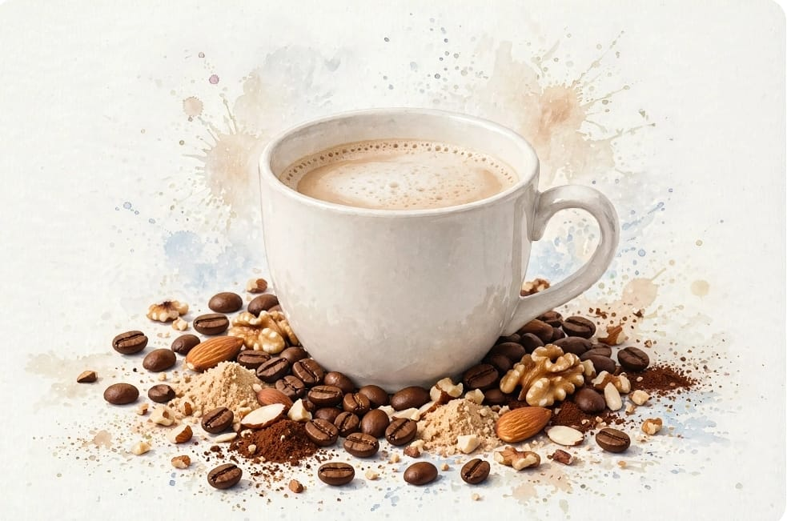
Coffee is one of the most popular beverages enjoyed around the world. It is made from carefully roasted coffee beans that produce a rich aroma and bold flavour. Coffee is served in homes, cafés, and restaurants, and is available in many styles such as espresso, cappuccino, latte, and black coffee.
To prepare coffee, roasted coffee beans are ground into a fine powder. Hot water is passed through or mixed with the coffee to extract its rich flavour. Depending on the style, milk, sugar, or milk foam may be added. The coffee is then served hot, while some varieties are prepared and served chilled with ice.
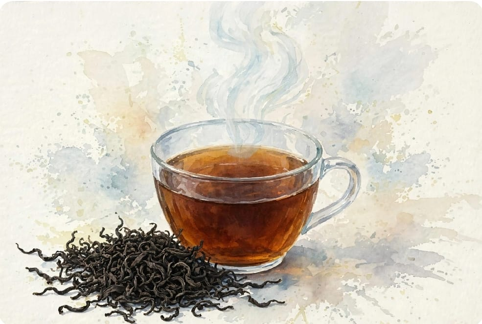
Black tea is a classic beverage made from fully oxidized tea leaves, giving it a deep colour, rich aroma, and bold flavour. It is one of the most widely consumed types of tea in the world and is enjoyed both plain and with milk. Black tea is commonly produced in regions such as Assam, Darjeeling, and Nilgiri in India.
To prepare black tea, water is brought to a boil and tea leaves are added. The tea is allowed to steep for a few minutes until it develops its rich colour and taste. The brewed tea is then strained into a cup and served hot. Sugar or milk may be added according to personal preference.
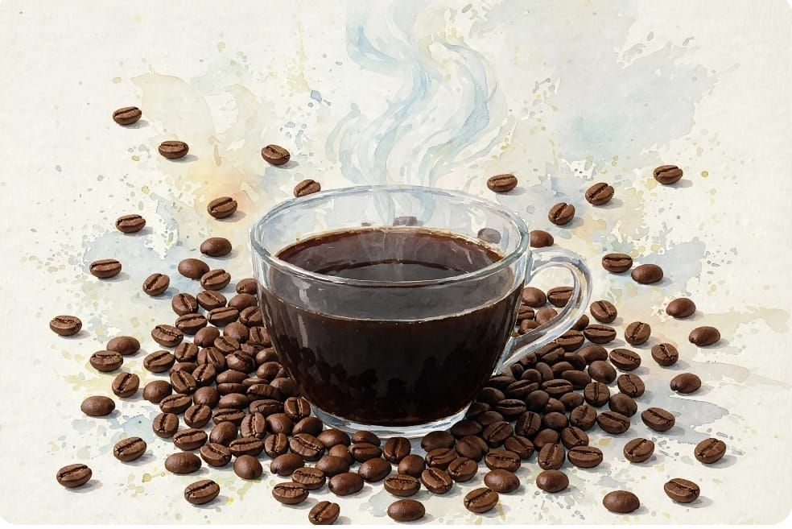
Black coffee is a popular beverage made from freshly brewed coffee without milk. It has a bold flavour, rich aroma, and deep dark colour. Black coffee is enjoyed by people around the world and is often chosen for its pure coffee taste and refreshing character.
To prepare black coffee, roasted coffee beans are ground into a fine powder. Hot water is poured over the ground coffee to extract its rich flavour and aroma. The brewed coffee is then filtered or strained and served hot without adding milk. Sugar may be added according to personal preference.
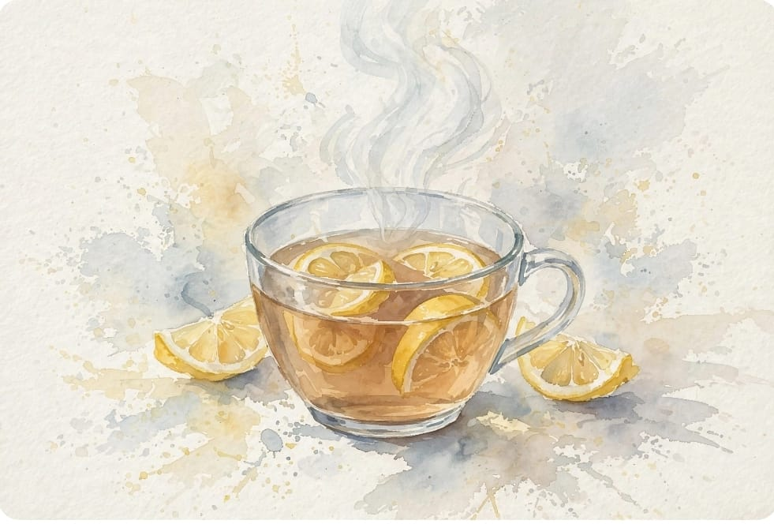
Lemon tea is a light and refreshing beverage made by combining brewed tea with fresh lemon juice. It has a pleasant citrus flavour and a bright golden colour. Lemon tea is enjoyed both hot and cold and is a popular choice for a refreshing drink at any time of the day.
To prepare lemon tea, tea leaves are brewed in hot water for a few minutes. The tea is then strained into a cup, and fresh lemon juice is added. Sugar or honey may be added according to personal preference. The tea is stirred well and served hot or chilled with ice.
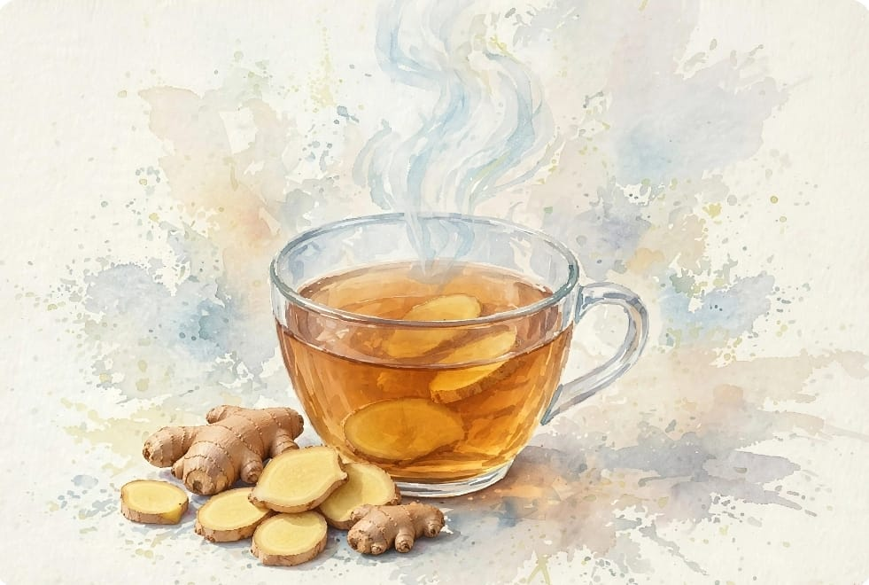
Ginger tea is a warm and refreshing beverage made by combining brewed tea with fresh ginger. It has a pleasant aroma, mild spicy flavour, and a golden-brown colour. Ginger tea is enjoyed hot and is a popular choice in homes and tea shops.
To prepare ginger tea, water is brought to a boil and fresh ginger slices are added. Tea leaves are then mixed into the water and allowed to steep for a few minutes. The tea is strained into a cup. Milk and sugar may be added according to personal preference before serving hot.
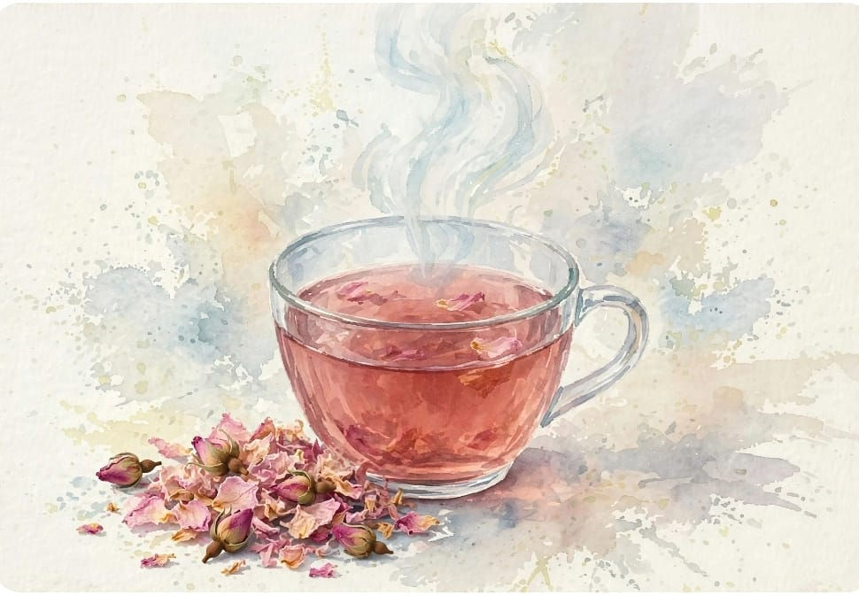
Rose petals tea is a delicate and fragrant beverage prepared using dried or fresh rose petals. It has a pleasant floral aroma, a light pink to golden colour, and a smooth, refreshing taste. Rose petals tea is enjoyed both hot and cold and is popular for its elegant flavour.
To prepare rose petals tea, water is brought to a gentle boil and rose petals are added. The petals are allowed to steep for a few minutes until the tea develops its floral aroma and light colour. The tea is then strained into a cup and served hot. Honey or sugar may be added according to personal preference.
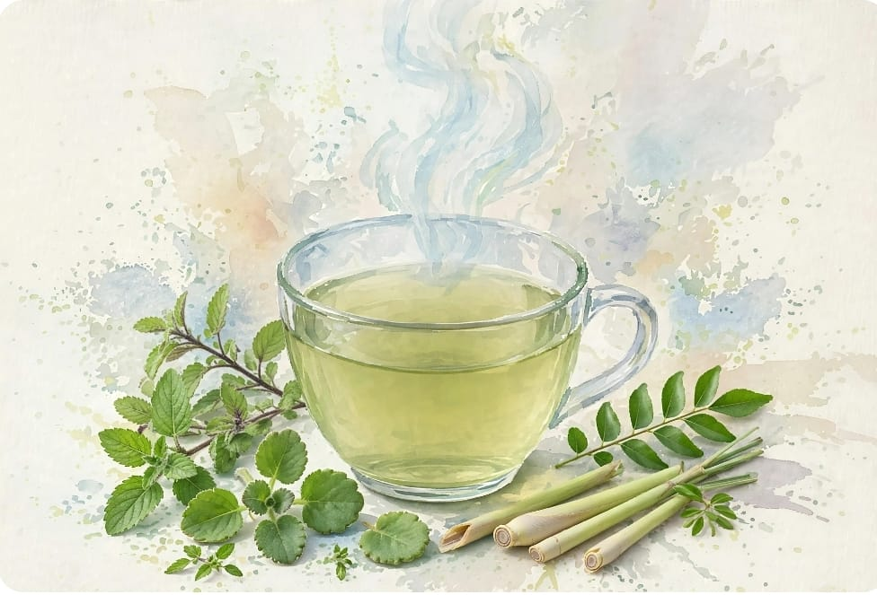
Herbal tea is a refreshing beverage prepared from natural herbs and plant leaves. It has a light colour, pleasant aroma, and smooth flavour. Unlike traditional tea, herbal tea is made using a variety of herbs and is enjoyed both hot and warm. It is a popular choice for a relaxing and refreshing drink.
To prepare herbal tea, fresh or dried herbs are added to boiling water and allowed to steep for several minutes. The tea is then strained into a cup. Honey or sugar may be added according to personal preference before serving hot.
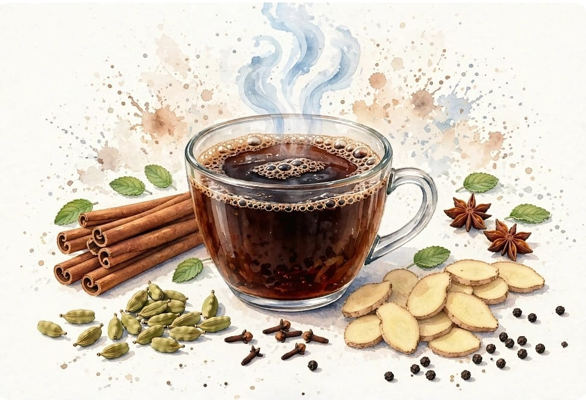
Spiced tea is a warm and aromatic beverage prepared by brewing tea leaves with selected spices. It has a rich amber colour, bold flavour, and pleasant aroma. This tea is served without milk, allowing the natural taste of the tea and spices to stand out clearly.
To prepare spiced tea, water is brought to a boil and tea leaves are added along with selected spices. The mixture is allowed to steep for a few minutes until it develops a rich colour and aroma. The tea is then strained into a cup and served hot. Sugar or honey may be added according to personal preference.
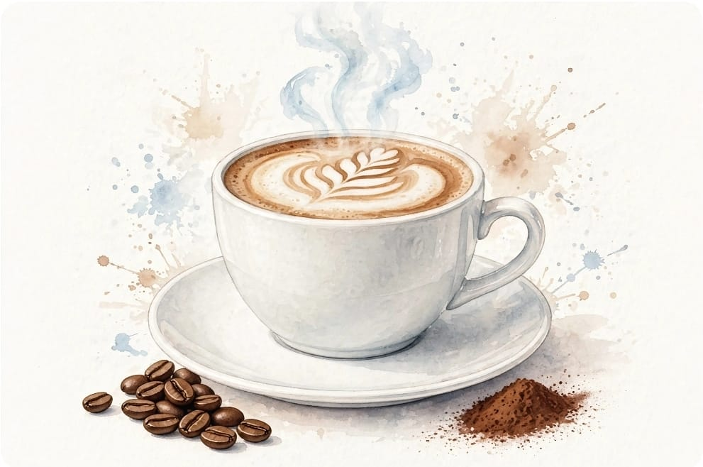
Cappuccino is a classic Italian coffee beverage made with espresso, steamed milk, and a thick layer of milk foam. It is known for its smooth texture, creamy taste, and rich coffee aroma. The balanced combination of espresso and milk creates a pleasant flavour that is enjoyed by coffee lovers around the world. Cappuccino is commonly served in cafés and coffee shops and is often topped with a light dusting of cocoa powder or chocolate powder for extra flavour and decoration.
To prepare cappuccino, freshly ground coffee beans are brewed to make a strong espresso. Fresh milk is steamed until it becomes hot and silky, then frothed to create a thick, creamy foam. The steamed milk is gently poured over the espresso, followed by the milk foam to form distinct layers. The drink is served hot and may be finished with a light sprinkle of cocoa powder or chocolate powder before serving.
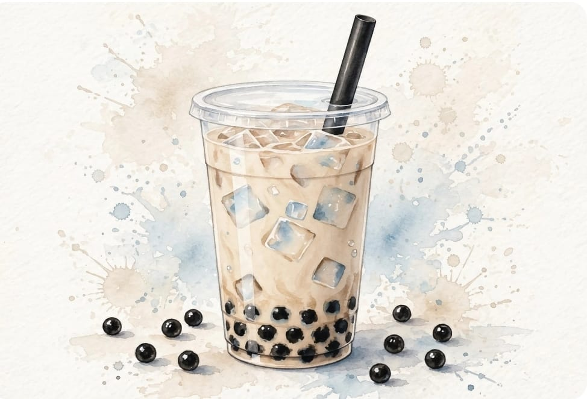
Bubble tea, also known as boba tea, is a popular beverage that originated in Taiwan. It is prepared by combining brewed tea, milk or fruit flavours, and chewy tapioca pearls. Bubble tea is known for its smooth texture, refreshing taste, and unique combination of drink and soft pearls. It is available in many flavours and is enjoyed by people of all ages around the world.
To prepare bubble tea, tea is first brewed and allowed to cool. Tapioca pearls are cooked until soft and chewy, then placed in a serving cup. Milk, fruit flavouring, or sweetener may be added according to the selected variety. Ice is added for a chilled drink, and the tea is poured over the pearls. The beverage is served with a wide straw that allows the pearls to be enjoyed along with the tea.
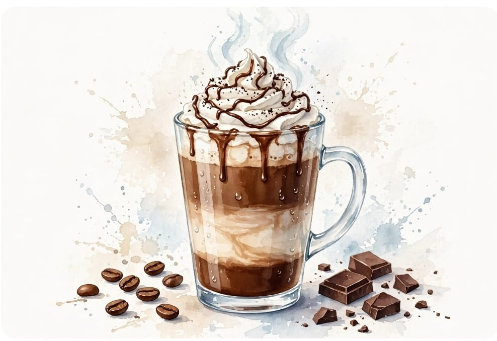
Mocha is a rich and creamy coffee beverage made by combining espresso, steamed milk, and chocolate. It is known for its smooth texture, balanced coffee flavour, and delicious chocolate taste. Mocha is one of the most popular café drinks, offering the perfect blend of coffee and sweetness. It is served both hot and cold, making it a favourite choice for coffee lovers.
To prepare mocha, freshly brewed espresso is combined with chocolate syrup or cocoa. Steamed milk is added and mixed well to create a smooth and creamy drink. The beverage is then topped with milk foam or whipped cream according to the preferred style. Mocha is served hot, while iced versions are prepared with chilled milk and ice cubes.
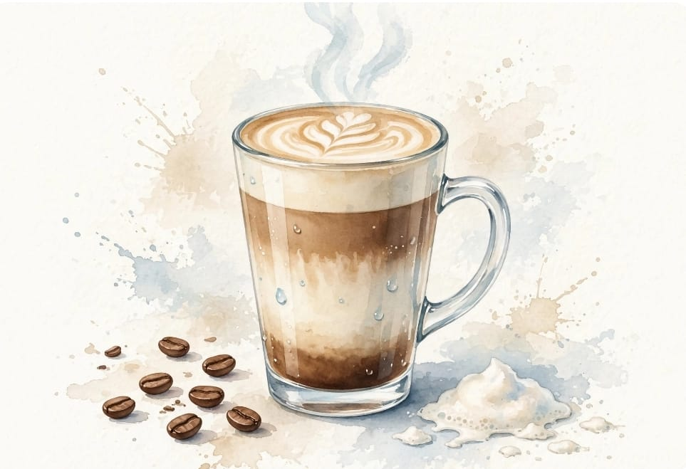
Latte is a smooth and creamy coffee beverage made with espresso and steamed milk. It has a mild coffee flavour, silky texture, and a light layer of milk foam on top. Latte is one of the most popular coffee drinks served in cafés around the world and is enjoyed for its balanced taste and rich aroma. It can be served plain or with flavours such as vanilla, caramel, or hazelnut.
To prepare a latte, a shot of freshly brewed espresso is poured into a cup. Steamed milk is slowly added to create a smooth and creamy texture, followed by a thin layer of milk foam. The drink is served hot, while iced lattes are prepared by pouring chilled milk and espresso over ice. Sweeteners or flavoured syrups may be added according to personal preference.
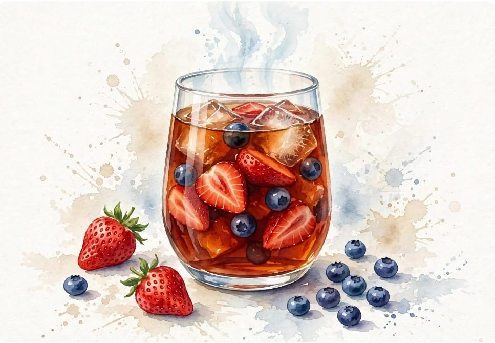
Fruit tea is a refreshing beverage prepared by combining brewed tea with fresh fruits or natural fruit flavours. It has a pleasant fruity aroma, vibrant colour, and a light, refreshing taste. Fruit tea is enjoyed both hot and cold and is available in a wide variety of flavours such as strawberry, blueberry, peach, mango, lemon, and mixed berries. It is a popular choice in cafés and tea shops, especially during warm weather.
To prepare fruit tea, tea leaves are brewed in hot water and allowed to cool slightly. Fresh fruits or fruit syrup are added to enhance the flavour and natural sweetness. Ice cubes may be added for a chilled version, while hot fruit tea is served immediately after brewing. Honey or sugar can be added according to personal preference before serving.
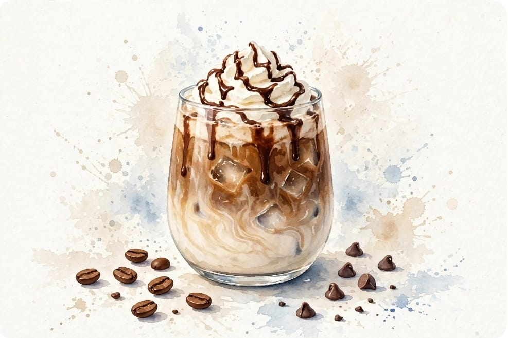
Frappé is a chilled coffee beverage known for its smooth, frothy texture and refreshing taste. It is prepared by blending coffee with ice, milk, and sweetener to create a creamy drink. Frappé is a popular choice in cafés and coffee shops, especially during warm weather. It is often served with whipped cream or chocolate drizzle for extra flavour.
To prepare a frappé, coffee is blended with ice, milk, and sugar until smooth and frothy. The blended drink is poured into a tall glass and may be topped with whipped cream, chocolate syrup, or cocoa powder according to personal preference. It is served immediately while cold.
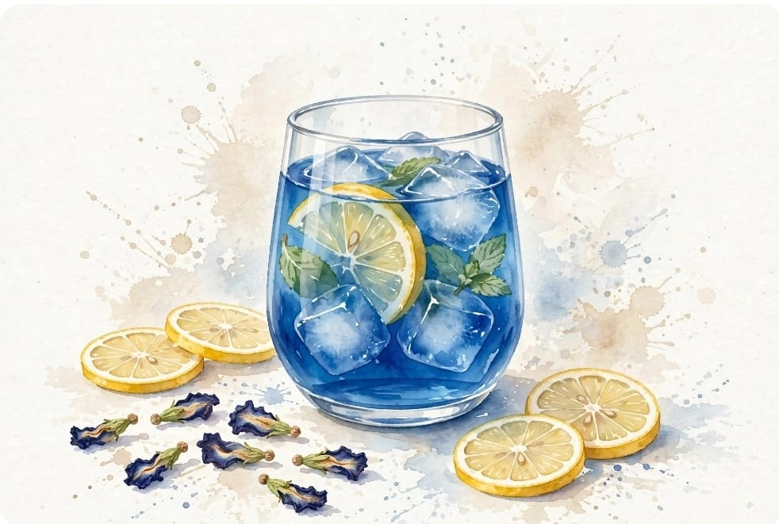
Butterfly pea tea is a colourful herbal beverage prepared from the dried flowers of the butterfly pea plant. It is well known for its natural deep blue colour, delicate floral aroma, and smooth taste. The tea is enjoyed both hot and cold and is a popular choice in cafés and tea shops. When lemon juice is added, the tea changes from blue to purple, creating an attractive visual effect.
To prepare butterfly pea tea, dried butterfly pea flowers are added to hot water and allowed to steep for several minutes until the water turns a rich blue. The flowers are then strained from the tea. Honey or sugar may be added according to personal preference. The tea can be served hot or chilled with ice.
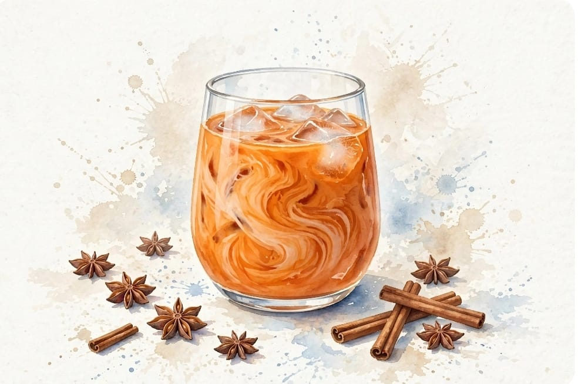
Thai milk tea is a rich and refreshing beverage that originated in Thailand. It is prepared by combining strong brewed tea with milk and sweetener, giving it a smooth texture and a distinctive orange colour. Thai milk tea has a balanced blend of tea flavour and creamy sweetness, making it one of the most popular milk tea varieties served in cafés and tea shops around the world.
To prepare Thai milk tea, strong black tea is brewed until it develops a rich colour and aroma. The tea is strained and mixed with milk and sweetener until smooth. It may be served hot or poured over ice for a chilled version. The drink is often presented in a tall glass and enjoyed immediately.
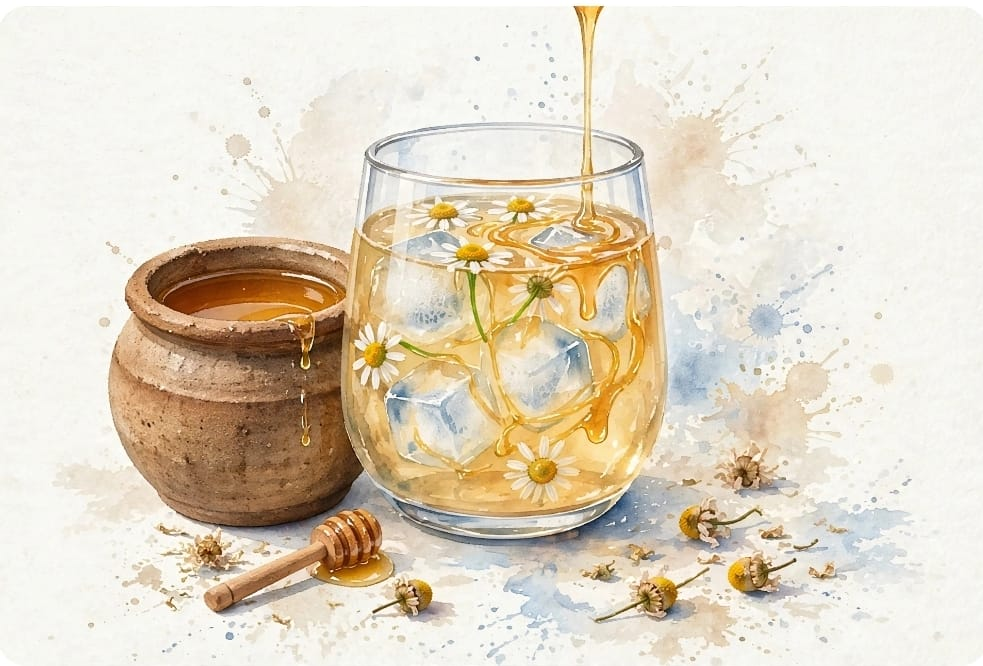
Chamomile tea is a delicate herbal beverage prepared from dried chamomile flowers. It is known for its light golden colour, gentle floral aroma, and smooth, naturally mild flavour. Chamomile tea is enjoyed around the world as a refreshing drink and is commonly served both hot and warm in homes, cafés, and tea shops.
To prepare chamomile tea, dried chamomile flowers are added to hot water and allowed to steep for several minutes. The flowers are then strained, leaving a clear golden infusion. Honey or sugar may be added according to personal preference. The tea is served hot, while a chilled version can be prepared by adding ice after brewing.
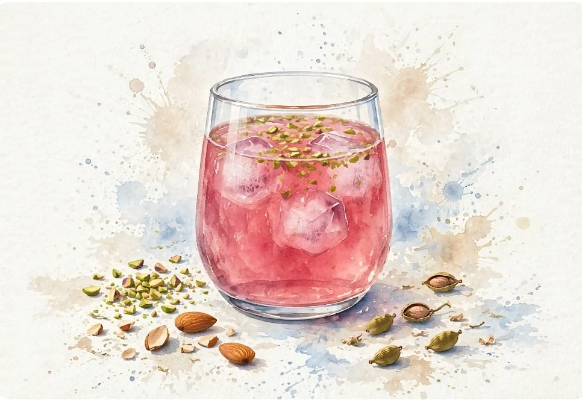
Kashmiri Pink Tea, also known as Noon Chai, is a traditional beverage from the Kashmir region. It is well known for its beautiful pink colour, smooth texture, and rich aroma. This unique tea has a creamy taste and is commonly served during special occasions and family gatherings. It is enjoyed both in homes and cafés for its distinctive appearance and flavour.
To prepare Kashmiri Pink Tea, special tea leaves are brewed in water until a rich infusion is formed. Milk is then added and the tea is gently simmered to develop its characteristic pink colour and creamy texture. The tea is stirred well and served hot. Sugar or salt may be added according to the traditional or preferred style.
Thank you for visiting Tea Shop. We hope you enjoyed exploring our collection of teas and coffees. We look forward to serving you with quality beverages and a delightful experience.
SREENANDA M ANIL
IDUKKI DISTRICT, KERALA
BCA STUDENT, MG UNIVERSITY
📧 sreenandamanil@gmail.com